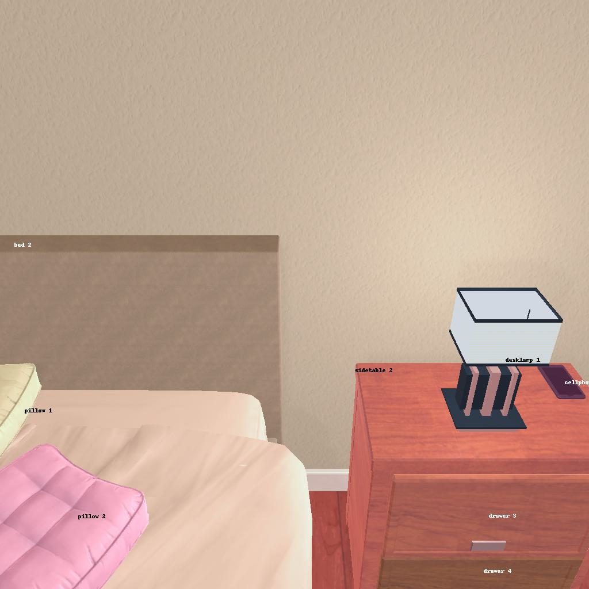

---------------------------------------------------------task: 6---------------------------------------------------------
--------------------------------------------------------------------------------------------------------------------------------------------------------------------
--------------------------------------------------------------------------------------------------------------------------------------------------------------------
Step:--------------------------------------------------------------------------13-------------------------------------------------------------------------------
----------------------------------------
VLM Prompt:
Image1:
**Instruction**
1. Analyze the provided image to identify all visible household objects, focusing on those relevant to the task description "put a cd in safe."
2. Use the analysis of the image and the task hint "The agent must find an object of the desired type, pick it up, find the correct location to place it, and put it down there." to answer the question: what is the most reasonable action in the choices for the task description "put a cd in safe"?
4. Decide and write the answer using the template: The answer is: (i): , where i is the real number. If there is no desired object in the image, search every place based on **Initial Observation** to find the object. And if no one is exactly correct, choose a similar answer.
**Initial Observation**
You are in the middle of a room. Looking quickly around you, you can see bed (1-2), dresser (1), sidetable (1-2), drawer (1-11), desk (1), garbagecan (1), safe (1)
**Answer Choices**
(1): go to bed 1
(2): go to dresser 1
(3): go to bed 2
(4): go to sidetable 1
(5): go to drawer 1
(6): go to drawer 2
(7): go to sidetable 2
(8): go to drawer 4
(9): go to desk 1
(10): go to garbagecan 1
(11): go to drawer 5
(12): go to drawer 6
(13): go to drawer 7
(14): go to drawer 8
(15): go to drawer 9
(16): go to drawer 10
(17): go to drawer 11
(18): go to safe 1
(19): open drawer 3
(20): close drawer 3
(21): examine drawer 3
**Answer**
Let's think step by step by following the instructions.
----------------------------------------
----------------------------------------
Original Response:
First, we analyze the image provided. There is no CD visible in the image. We see a bed, pillows, a sidetable, a desk lamp, a cellphone, and drawers that are part of the sidetable. None of these objects is a CD.
According to the task description "put a cd in safe," we must locate a CD first. The initial observation informs us that there are multiple drawers and other furniture items in the room, which could potentially contain a CD. Since the image does not show a CD, we need to search the room.
As per the task hint, we need to find the object of the desired type (a CD in this case). We should start by searching places where a CD is likely to be stored, such as drawers.
Considering the options given, the most reasonable action is to start searching the drawers since they are common storage places for small objects like CDs. Out of the drawer options, we should start with the drawers that are part of the sidetable since they are closest to the safe, which would make the task of putting the CD in the safe more efficient once it is found.
The answer is: (19): open drawer 3.
----------------------------------------
----------------------------------------
>>> Refine Original VLM Response and Get Pure Action: open drawer 3
----------------------------------------
-----------------------------------------------------------------
Running time: 10.470019817352295 seconds
Total Money: 1.8696300000000003
-----------------------------------------------------------------
-----------------------------------------------------------------
Text Observation:You open the drawer 3. The drawer 3 is open. In it, you see a pillow 2, a desklamp 1, a pillow 1, and a cellphone 3.
-----------------------------------------------------------------
UNSUCCEED